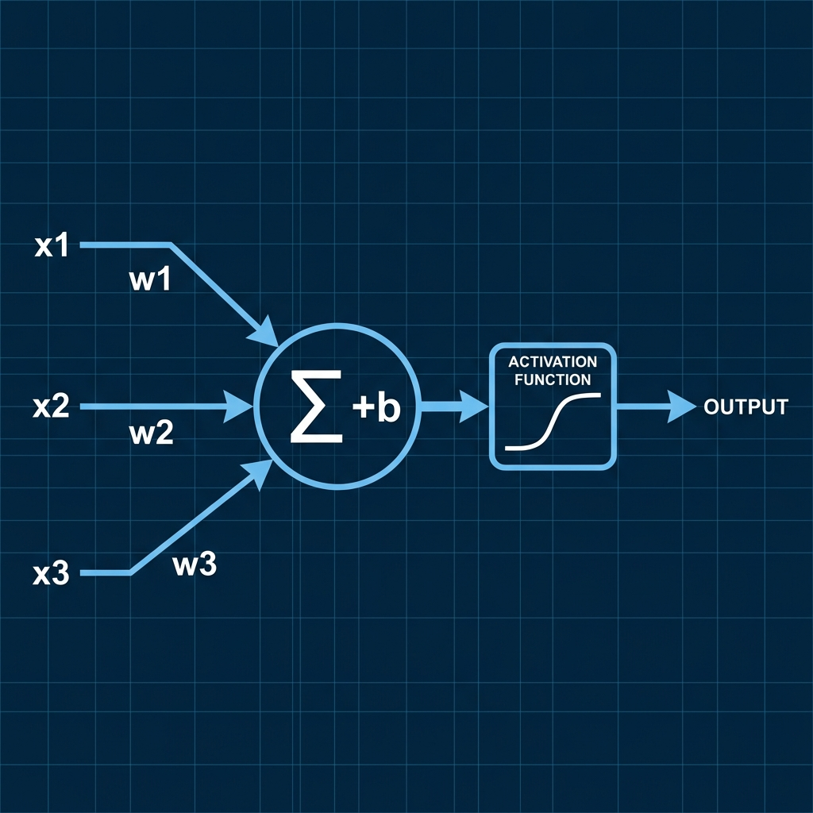
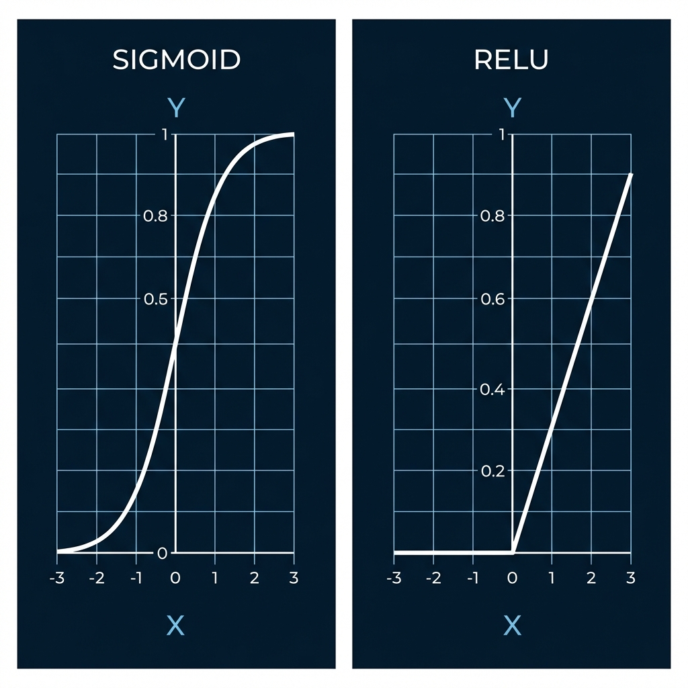
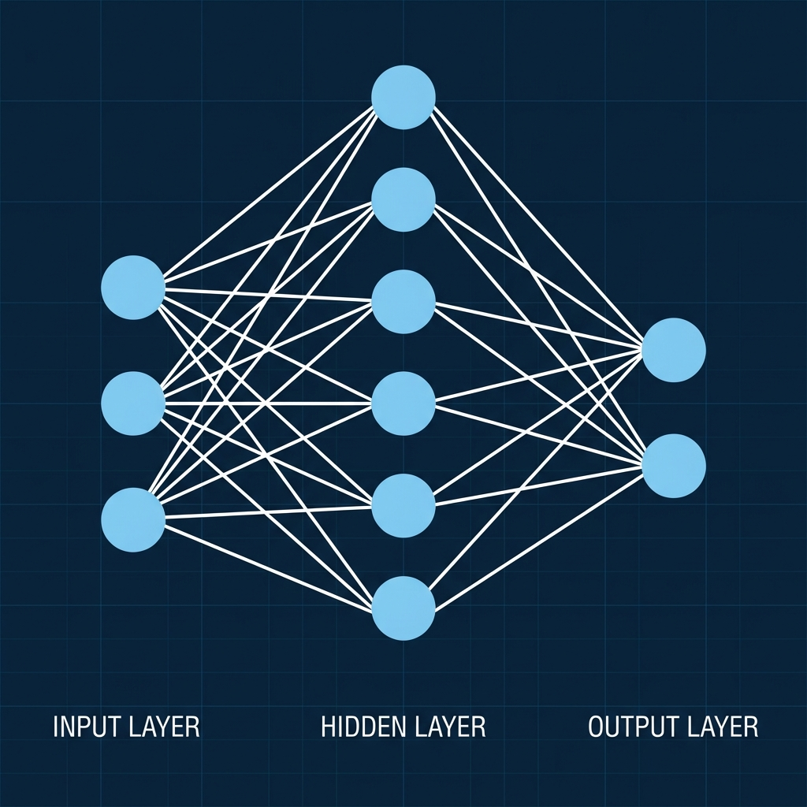
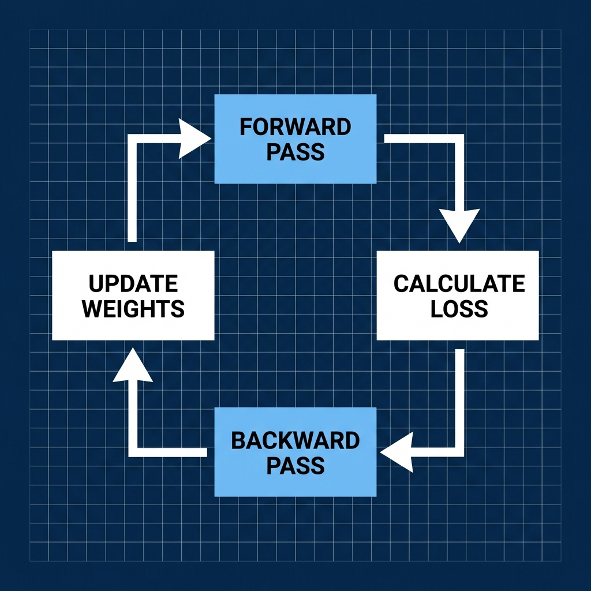

Neural Networks & Deep Learning Basics
Course: Computer Systems Engineering
Module: Artificial Intelligence (AI)
Topic: Neural Networks (The "Deep" in Deep Learning)
Estimated Reading Time: 40 Minutes
By the end of this chapter, you will be able to:
1. Explain the anatomy of a perceptron (weights, bias, activation).
2. Differentiate between Sigmoid and ReLU activation functions.
3. Design a Multi-Layer Perceptron (MLP) architecture.
4. Trace the flow of Backpropagation (Forward, Loss, Backward, Update).
5. Build a neural network forward pass using NumPy.
We are leaving "Classical Machine Learning" behind. While Linear Regression drew a simple line and Decision Trees built a flowchart, Neural Networks attempt to build a brain. This week is arguably the hardest but most rewarding. We will deconstruct the internal mechanics of modern AI by building a Neural Network from scratch—using only raw mathematics and Python—before we introduce high-level frameworks like PyTorch next week.
1. The Perceptron
The smallest unit of a Neural Network is a Perceptron (or Neuron).
1.1 The Anatomy of a Neuron
To understand a neural network, we must first dissect its fundamental building block: the neuron. It consists of five key components (see Figure 1):
-
Inputs ($x$): These act as the raw data points entering the neuron, similar to how our eyes perceive individual pixels of light. In a digital image, each input might represent the brightness value of a single pixel.
-
Weights ($w$): Assigned to each input, weights represent the importance or strength of that connection. If a specific input is crucial for the decision (like a sharp edge in an image), it gets a higher weight. Training a network is essentially just adjusting these weights until they are correct.
-
Bias ($b$): This is an extra parameter that acts as a threshold or offset. It allows the neuron to shift its activation function left or right, ensuring that the neuron can fire even when all inputs are zero, much like the intercept in a linear equation.
-
Weighted Sum: The neuron first aggregates all information by multiplying each input by its weight and adding the bias: $z = \sum (x \cdot w) + b$. This is mathematically identical to the Linear Regression formula we learned earlier.
-
Activation Function ($a$): This is the decision-maker. It takes the weighted sum and decides whether the neuron should "fire" (output a strong signal) or stay dormant. It adds non-linearity, enabling the network to learn complex patterns beyond simple straight lines.
$$Output = Activation(\sum (Input \cdot Weight) + Bias)$$

Figure 1: Anatomy of an Artificial Neuron. Inputs ($x$) are weighted ($w$) and summed with a bias ($b$) before passing through an activation function.
2. Activation Functions
Why do we need them?
To understand their importance, imagine a neural network without activation functions. In such a scenario, every neuron would perform only a linear transformation (multiplying input by weight and adding bias).
There is a fundamental mathematical limitation here: Linear + Linear = Linear.
No matter how many layers you stack—you could have 100 hidden layers with 1,000 neurons each—the entire network would mathematically collapse into a single linear equation ($y = mx + c$). It would effectively be just a complex-looking Linear Regression model. It could draw a straight line through data, but it could never learn to separate data that is curved, circular, or scattered in complex ways.
Activation functions introduce non-linearity. They bend the line. By applying a non-linear function (like turning negative values to zero) at every neuron, we allow the network to approximate any function, no matter how complex. This capability, known as the Universal Approximation Theorem, is what enables neural networks to recognize faces, understand language, and drive cars.
2.1 Common Functions

Figure 2: Comparison of Sigmoid and ReLU Activation Functions. Notice how Sigmoid saturates at 0 and 1, while ReLU is linear for positive values.
There are several activation functions used in deep learning (see Figure 2), but two of the most critical ones to understand are Sigmoid and ReLU.
2.1.1 Sigmoid
The Sigmoid function, often represented by the Greek letter $\sigma$, produces a smooth S-shaped curve. Its defining characteristic is that it compresses, or “crushes,” any input value into a narrow range between 0 and 1. Because of this behaviour, sigmoid outputs are easy to interpret as probabilities. For example, if a neuron produces an output of 0.95, we can naturally read this as the model being 95% confident in its prediction.
Despite this intuitive interpretation, the sigmoid function is poorly suited for deep neural networks. When input values become very large or very small, the sigmoid curve flattens out. In these flat regions, the gradient becomes extremely small. During backpropagation, these tiny gradients are passed backward through multiple layers and rapidly diminish, preventing earlier layers from learning effectively. This phenomenon is known as the vanishing gradient problem, and it is the main reason sigmoid is rarely used in the hidden layers of modern deep learning models.
2.1.2 ReLU (Rectified Linear Unit)
The ReLU (Rectified Linear Unit) activation function is defined by the simple mathematical rule:
$$f(x) = max(0, x)$$
Although this definition looks almost too simple, ReLU is one of the key reasons modern deep learning models are able to train effectively.
At a basic level, ReLU acts as a gate. When the input to a neuron is positive, the function passes that value through unchanged, allowing the information to continue forward through the network. When the input is negative, the output becomes zero, effectively shutting the neuron off for that particular input. This behaviour introduces non-linearity while remaining easy to compute.
One of ReLU’s greatest strengths is how it behaves during training. Unlike sigmoid, ReLU does not squash all outputs into a small range. For positive inputs, the gradient remains constant rather than shrinking toward zero. This allows error signals during backpropagation to flow backward through many layers without disappearing, greatly reducing the vanishing gradient problem. As a result, deep networks with many hidden layers can actually learn meaningful features.
ReLU is also computationally efficient. It involves only a simple comparison and does not require expensive operations such as exponentials or divisions. This efficiency becomes critical when training large networks with millions of neurons and billions of calculations.
Another important property of ReLU is that it encourages sparse activation. Because negative inputs produce an output of zero, many neurons are inactive at any given time. This sparsity can improve learning efficiency and help the network focus on the most relevant features in the data.
Because of its simplicity, training stability, and practical effectiveness, ReLU has become the default activation function for hidden layers in most state-of-the-art neural networks used in computer vision, speech recognition, and natural language processing.
While ReLU solves many problems, it is not perfect. Some neurons can become permanently inactive if they only receive negative inputs during training, a situation known as the “dying ReLU” problem. Variants such as Leaky ReLU were introduced to address this issue.
3. The Multi-Layer Perceptron (MLP)
One neuron is weak. But if we organize them into layers, they become powerful.
3.1 Network Architecture
A standard Multi-Layer Perceptron (MLP) consists of three distinct types of layers (see Figure 3), each with a specific purpose:
-
Input Layer: This is the entryway for data into the network. It passively receives raw information, such as the 784 individual pixel values of a 28x28 grayscale image. Importantly, this layer usually performs no calculation; it simply holds the data for the next layer.
-
Hidden Layers: Positioned between the input and output, these layers do the heavy lifting. This is where the network extracts features and patterns. Early hidden layers might detect simple edges, while deeper layers combine these edges to recognize complexity like shapes, textures, or even eyes and noses. This hierarchical learning is why we call it "Deep" Learning.
-
Output Layer: The final destination of the signal. This layer transforms the network's understanding into a prediction. For a digit classification task, it would have 10 neurons, where each neuron represents the probability that the image corresponds to a specific digit from "0" through "9".
Fully-Connected (Dense): Every neuron in Layer 1 is connected to every neuron in Layer 2.

Figure 3: Multi-Layer Perceptron Architecture. Input data flows from left to right through connections to the hidden layer and finally the output layer.
4. How Training Works: Backpropagation
Backpropagation is the core algorithm that allows a neural network to learn from its mistakes. Without it, a network could make predictions, but it would have no systematic way to improve them. The process happens in four tightly connected steps and is repeated thousands of times during training.
Step 1: Forward Propagation — The Guess
Training begins with forward propagation. Input data is fed into the network and flows layer by layer from the input layer, through the hidden layers, and finally to the output layer.
At each neuron, the input is multiplied by weights, a bias is added, and an activation function is applied. By the time the data reaches the output layer, the network produces a prediction.
For example, when shown an image of a handwritten digit, the network might say:
“I think this image is a digit ‘3’ with 50% confidence.”
At this stage, the network is simply making its best guess based on its current weights.
Step 2: Loss Calculation — The Error
Next, the network compares its prediction to the true label. If the correct answer is actually the digit 5, then the prediction is wrong.
This difference between the predicted output and the true answer is measured using a loss function. The loss is a single number that tells us how bad the prediction was. A small loss means the prediction was close; a large loss means it was far off.
The loss function gives the network a clear objective: reduce this error.
Step 3: Backward Propagation — The Blame
Now comes the key idea. To reduce the loss, the network must figure out which weights caused the mistake and by how much. This is the purpose of backpropagation.
Starting from the output layer, the algorithm moves backward through the network. Using the Chain Rule of Calculus, it computes how sensitive the loss is to each individual weight.
In effect, the network assigns responsibility for the error:
“Neuron 45 in Layer 2 contributed a lot to this mistake — your weight needs to decrease.”
“Neuron 12 in Layer 1 had little effect — your weight should change only slightly.”
Each weight receives a gradient, which tells us the direction and magnitude of change needed to reduce the error.
Step 4: Optimization — The Fix
Finally, the network updates its weights using an optimization method, most commonly Gradient Descent.
Each weight is adjusted slightly in the opposite direction of its gradient. This nudges the network toward a better solution without changing things too drastically. After the update, the network is a little bit better than it was before.
The big picture
This entire process (as illustrated in Figure 4) — forward propagation, loss calculation, backpropagation, and weight updates — is repeated over and over with many training examples. With each cycle, the network gradually improves its predictions.

Figure 4: The Cycle of Backpropagation. Training is an iterative loop of guessing, measuring error, and assigning blame to update weights.
5. Lab Preview: Building it from Scratch
In this week's lab (Experiment 1), we will not use sklearn or PyTorch.
We will use pure Python and numpy to build:
1. Affine Layer: The $wx+b$ math.
2. ReLU Layer: The non-linearity.
3. SoftmaxWithLoss: The output probability and error calculation.
4. Training Loop: The forward and backward pass.
If you can build this, you understand AI.
6. Introduction to TensorFlow & Keras
6.1 What is TensorFlow?
TensorFlow is an end-to-end open-source platform for machine learning, developed by Google. While it is famous for Deep Learning, it is essentially a library for numerical computation using data flow graphs.
Key features:
-
Ecosystem: From research (TensorFlow) to production (TFX) to mobile (TF Lite) and web (TF.js).
-
Hardware Acceleration: Automatically runs on CPUs, GPUs, and TPUs (Tensor Processing Units) without changing code.
6.2 Tensors: The Atoms of Deep Learning
A Tensor is a multi-dimensional array, similar to a NumPy array, but with two key differences:
1. It can run on a GPU.
2. It is immutable (for tf.constant).
Types of Tensors:
-
Scalar (Rank 0): A single number.
tf.constant(4) -
Vector (Rank 1): A list of numbers.
tf.constant([1.0, 2.0, 3.0]) -
Matrix (Rank 2): A 2D table.
tf.constant([[1, 2], [3, 4]]) -
n-Tensor (Rank n): Higher dimensions (e.g., an image is Rank 3: Height x Width x Channels).
Variables:
To train a model, we need values that change (like weights and biases). For this, we use tf.Variable.
import tensorflow as tf
# A constant (cannot change)
c = tf.constant([[1.0, 2.0], [3.0, 4.0]])
# A variable (can be updated during training)
# Initialize with random values from a normal distribution
w = tf.Variable(tf.random.normal([2, 2]), name='weights')
6.3 Basic Operations
TensorFlow supports standard mathematical operations.
a = tf.constant([[1, 2], [3, 4]])
b = tf.constant([[1, 1], [1, 1]])
# Element-wise Addition
print(tf.add(a, b)) # [[2, 3], [4, 5]]
# Element-wise Multiplication
print(tf.multiply(a, b)) # [[1, 2], [3, 4]]
# Matrix Multiplication (The Dot Product)
# This is the most common operation in Neural Networks
print(tf.matmul(a, b)) # [[3, 3], [7, 7]]
6.4 Type Conversions and Broadcasting
Just like NumPy, TensorFlow supports Broadcasting (expanding smaller tensors to match larger ones for operations). However, TensorFlow is significantly stricter about Type Conversions: it will not automatically convert integer tensors to float tensors. You must do this manually using tf.cast() to avoid errors.
# Broadcasting: Adding a scalar to a matrix
print(tf.add(a, 10)) # Adds 10 to every element in tensor 'a'
# Type Conversion
t1 = tf.constant(42) # This is an int32 tensor
t2 = tf.cast(t1, tf.float32) # Converting to float32
6.5 Automatic Differentiation (GradientTape)
How do neural networks learn? By calculating gradients (derivatives) of the error with respect to the weights. TensorFlow handles this calculus automatically using the Gradient Tape.
Any operation recorded inside a with tf.GradientTape() as tape: block can be differentiated.
x = tf.Variable(3.0)
with tf.GradientTape() as tape:
y = x ** 2 # y = x^2
# Calculate dy/dx (which is 2x)
dy_dx = tape.gradient(y, x)
print(dy_dx.numpy()) # Output: 6.0 (since 2 * 3 = 6)
6.6 Comparison: Linear Regression from Scratch
Let's solve a simple linear problem: $y = W \cdot x + b$.
We will generate synthetic data and train a model to find $W$ and $b$ using raw Tensors.
import matplotlib.pyplot as plt
# 1. Generate Synthetic Data
TRUE_W = 3.0
TRUE_B = 2.0
NUM_EXAMPLES = 1000
# Random inputs
inputs = tf.random.normal(shape=[NUM_EXAMPLES])
# True outputs with some random noise
noise = tf.random.normal(shape=[NUM_EXAMPLES])
outputs = inputs * TRUE_W + TRUE_B + noise
# 2. Define the Model (Weights and Biases)
# Initialize randomly
W = tf.Variable(5.0)
b = tf.Variable(0.0)
def model(x):
return W * x + b
# 3. Define Loss Function (Mean Squared Error)
def loss(predicted_y, target_y):
return tf.reduce_mean(tf.square(predicted_y - target_y))
# 4. Training Loop
learning_rate = 0.1
epochs = 20
print(f"Starting: W={W.numpy():.2f}, b={b.numpy():.2f}")
for epoch in range(epochs):
with tf.GradientTape() as tape:
current_loss = loss(model(inputs), outputs)
# Compute Gradients
dW, db = tape.gradient(current_loss, [W, b])
# Update Weights (Gradient Descent)
W.assign_sub(learning_rate * dW)
b.assign_sub(learning_rate * db)
if epoch % 5 == 0:
print(f"Epoch {epoch}: Loss: {current_loss.numpy():.2f}, W: {W.numpy():.2f}, b: {b.numpy():.2f}")
print(f"Final: W={W.numpy():.2f}, b={b.numpy():.2f} (Target: 3.0, 2.0)")
6.7 The High-Level API: Keras
While GradientTape gives you low-level control, Keras provides the standard building blocks for Deep Learning.
In Keras, you assemble Layers into a Model.
# The exact same regression model using Keras
model = tf.keras.Sequential([
tf.keras.layers.Dense(units=1, input_shape=[1])
])
model.compile(optimizer='sgd', loss='mean_squared_error')
model.fit(inputs, outputs, epochs=5)
For Deep Learning, we simply stack more layers and use non-linear activations:
model = tf.keras.Sequential([
tf.keras.layers.Dense(128, activation='relu'), # Hidden Layer
tf.keras.layers.Dense(10, activation='softmax') # Output Layer
])
7. Example: Building an Image Classifier with Keras
To put everything together, let's build a simple Neural Network to classify images. We will use the famous Fashion MNIST dataset, which contains 70,000 grayscale images of clothing items (like shirts, shoes, and coats) in 10 categories, each $28 \times 28$ pixels in size.
7.1 Loading the Data
Keras provides handy utility functions to fetch common datasets directly.
import tensorflow as tf
# Load the dataset
fashion_mnist = tf.keras.datasets.fashion_mnist
(X_train_full, y_train_full), (X_test, y_test) = fashion_mnist.load_data()
# Scale pixel intensities down to the 0-1 range by dividing them by 255.0
X_train_full = X_train_full / 255.0
X_test = X_test / 255.0
7.2 Building the Model using the Sequential API
We will construct a Multi-Layer Perceptron (MLP) with two hidden layers using the Sequential API. We use the Sequential model because our network is a simple linear stack of layers—information flows straight from input to output without any complex branching or multiple inputs.
FlattenLayer: Neural networks expect flat, 1D arrays of numbers, but our images are 2D grids ($28 \times 28$ pixels). The Flatten layer simply unrolls this 2D grid into a single long 1D array of 784 pixels.DenseLayers: These are Fully-Connected layers (as discussed in Section 3). The term "Dense" means every single neuron in this layer is connected to every single neuron in the previous layer. This dense web of connections allows the network to learn complex hierarchical patterns.
model = tf.keras.models.Sequential([
# Input layer: Reshapes the 28x28 image into a 1D array of 784 pixels
tf.keras.layers.Flatten(input_shape=[28, 28]),
# First Hidden Layer: 300 neurons with ReLU activation
tf.keras.layers.Dense(300, activation="relu"),
# Second Hidden Layer: 100 neurons with ReLU activation
tf.keras.layers.Dense(100, activation="relu"),
# Output Layer: 10 neurons (one for each class) with Softmax activation
tf.keras.layers.Dense(10, activation="softmax")
])
The softmax activation function ensures that the output values are all between 0 and 1, and that they sum up to 1, representing the probability of each class.
7.3 Compiling and Training the Model
After defining the model, we need to specify the loss function and the optimizer (how we update the weights).
# Compile the model
model.compile(loss="sparse_categorical_crossentropy",
optimizer="sgd", # Stochastic Gradient Descent
metrics=["accuracy"])
# Train the model for 30 epochs
history = model.fit(X_train_full, y_train_full, epochs=30, validation_split=0.1)
7.4 Making Predictions
Finally, we can use our trained network to predict the class of a new image.
# Predict the probabilities for the first 3 images in the test set
X_new = X_test[:3]
y_proba = model.predict(X_new)
print(y_proba.round(2)) # Prints an array of probabilities for each class
8. Summary
Neural Networks are built from layers of perceptrons. Activation functions such as ReLU give these networks the power to model complex patterns. Forward propagation is how the network makes predictions, while backpropagation is how it learns from its mistakes.
Next week, we introduce the power tools: PyTorch and Convolutional Neural Networks (CNNs).
Test Your Knowledge
Ready to check your understanding of this week's material? Take the interactive quiz now!
Start Quiz